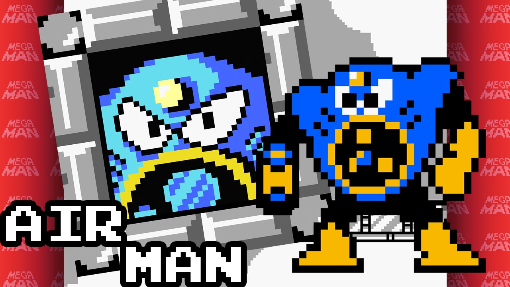
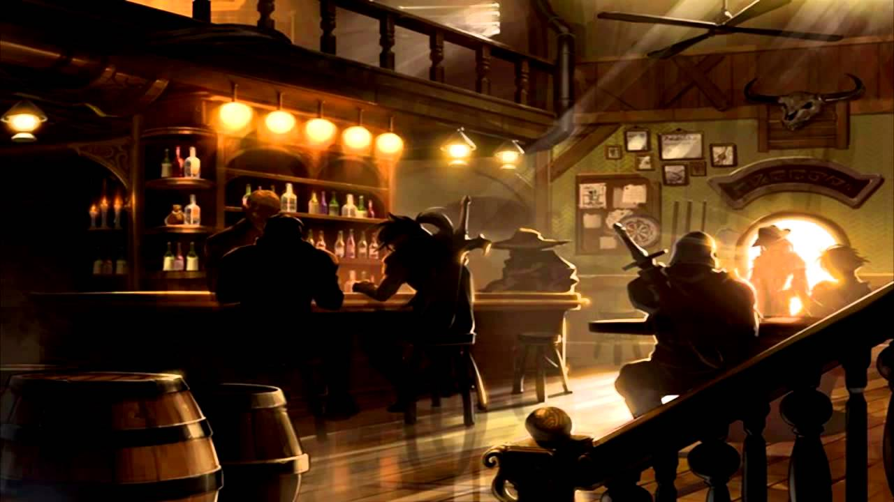
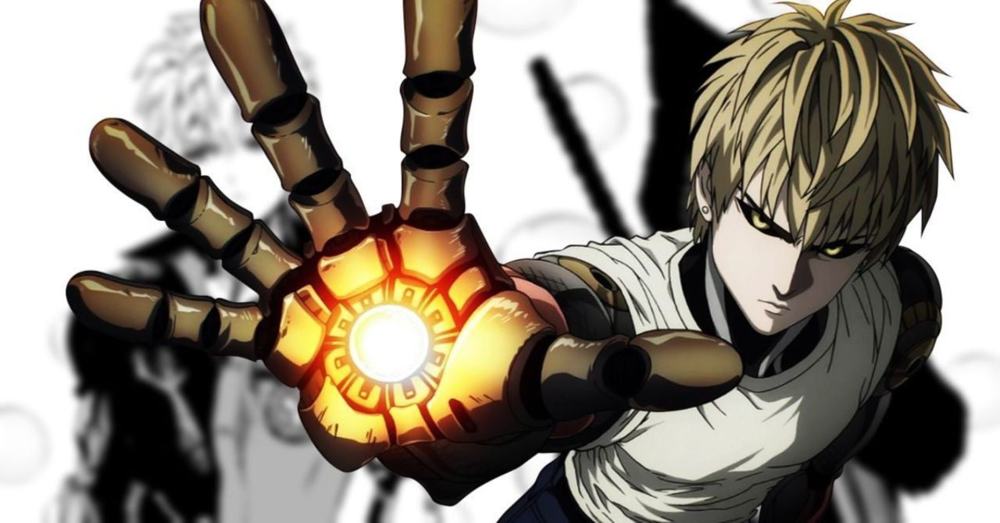

 Air Man (エアーマン Eāman) is a Robot Master from the Mega Man series created by Dr. Wily specially for combat, debuting in Mega Man 2. Air Man has his face built into his torso instead of a head - an unusual design, said to be intimidating. This body supposedly worked out so well from a design perspective that it was dubbed the "Air Man type" design, and would be used as a basis for future creations such as Needle Man. Air Man's main method of attack is to generate powerful winds with the propeller in his torso - in particular, he is able to push enemies away or pull them or other items towards him, generate typhoons, and can use his Special Weapon, the Air Shooter, to attack foes with rapid barrages of tornadoes.

It is finally time to meet with Aganzo and his Zanbato. Bwanga says that you would find the Gray Slayer at Moonlight Tavern, but he has yet to arrive. While waiting for him, you happened to get involved in a fight between a drunken patron and backstreet bullies... Hopefully, Aganzo will appear soon.

Genos, or the Demon Cyborg, is the deuteragonist of the webcomic-turned manga/anime series One Punch Man. He's an S-Class hero of the Hero Association and is the disciple of Saitama, as he seeks to become stronger to kill a rogue cyborg that killed his parents four years ago. He acts as a foil to Saitama in the series. He is voiced by Kaito Ishikawa in the Japanese version of the anime, and by Zach Aguilar in the English version of the anime.